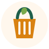

Alimento que Aproxima
Em andamentoProjeto de arrecadação e distribuição de alimentos para famílias em situação de vulnerabilidade.

Projeto de arrecadação e distribuição de alimentos para famílias em situação de vulnerabilidade.
Ação voltada à arrecadação de roupas, cobertores e calçados em bom estado para distribuição durante os períodos de frio.
Encontro de voluntários para organizar doações, orientar famílias atendidas e apoiar atividades comunitárias.
Pessoas interessadas podem colaborar na organização das campanhas, separação das doações, atendimento durante as ações e apoio logístico.
Para participar, basta acessar a página de cadastro e selecionar a opção de trabalho voluntário.
As campanhas recebem alimentos não perecíveis, roupas, cobertores, materiais de higiene e outras contribuições definidas conforme a necessidade de cada ação.
Quem deseja contribuir financeiramente ou apoiar uma campanha pode entrar em contato com o Instituto ou realizar o cadastro como apoiador.